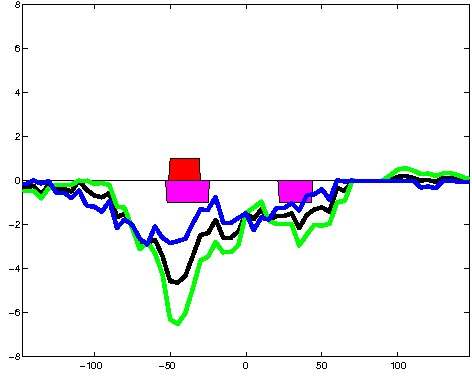

HepG2 Repressive DNase matched - State 12:CtcfO (n=66)
HepG2 Repressive DNase matched - State 12:CtcfO (n=66)
[
See group descriptions
]

; picked in HepG2 (state 12:CtcfO, DNase); matched; chr5:95,769,829-95,770,123 (295bp)")
; picked in HepG2 (state 12:CtcfO, DNase); matched; chr9:132,552,709-132,553,003 (295bp)")
; picked in HepG2 (state 12:CtcfO, DNase); matched; chr1:229,566,509-229,566,803 (295bp)")
; picked in HepG2 (state 12:CtcfO, DNase); matched; chr9:137,341,489-137,341,783 (295bp)")
; picked in HepG2 (state 12:CtcfO, DNase); matched; chr7:44,516,949-44,517,243 (295bp)")
; picked in HepG2 (state 12:CtcfO, DNase); matched; chr17:72,956,809-72,957,103 (295bp)")
; picked in HepG2 (state 12:CtcfO, DNase); matched; chr17:75,062,869-75,063,163 (295bp)")
; picked in HepG2 (state 12:CtcfO, DNase); matched; chr22:37,726,549-37,726,843 (295bp)")
; picked in HepG2 (state 12:CtcfO, DNase); matched; chr15:48,799,669-48,799,963 (295bp)")
; picked in HepG2 (state 12:CtcfO, DNase); matched; chr8:58,255,869-58,256,163 (295bp)")
; picked in HepG2 (state 12:CtcfO, DNase); matched; chr8:22,094,849-22,095,143 (295bp)")
; picked in HepG2 (state 12:CtcfO, DNase); matched; chr9:38,371,509-38,371,803 (295bp)")
; picked in HepG2 (state 12:CtcfO, DNase); matched; chr2:163,794,929-163,795,223 (295bp)")
; picked in HepG2 (state 12:CtcfO, DNase); matched; chr15:32,160,049-32,160,343 (295bp)")
; picked in HepG2 (state 12:CtcfO, DNase); matched; chr11:65,618,509-65,618,803 (295bp)")
; picked in HepG2 (state 12:CtcfO, DNase); matched; chr3:127,852,309-127,852,603 (295bp)")
; picked in HepG2 (state 12:CtcfO, DNase); matched; chr20:12,947,169-12,947,463 (295bp)")
; picked in HepG2 (state 12:CtcfO, DNase); matched; chr1:1,307,449-1,307,743 (295bp)")
; picked in HepG2 (state 12:CtcfO, DNase); matched; chr6:74,385,189-74,385,483 (295bp)")
; picked in HepG2 (state 12:CtcfO, DNase); matched; chr9:95,766,049-95,766,343 (295bp)")
; picked in HepG2 (state 12:CtcfO, DNase); matched; chr6:64,722,129-64,722,423 (295bp)")
; picked in HepG2 (state 12:CtcfO, DNase); matched; chr16:5,075,409-5,075,703 (295bp)")
; picked in HepG2 (state 12:CtcfO, DNase); matched; chr22:20,226,069-20,226,363 (295bp)")
; picked in HepG2 (state 12:CtcfO, DNase); matched; chr7:4,793,529-4,793,823 (295bp)")
; picked in HepG2 (state 12:CtcfO, DNase); matched; chr1:211,123,309-211,123,603 (295bp)")
; picked in HepG2 (state 12:CtcfO, DNase); matched; chr9:42,322,469-42,322,763 (295bp)")
; picked in HepG2 (state 12:CtcfO, DNase); matched; chr1:178,279,849-178,280,143 (295bp)")
; picked in HepG2 (state 12:CtcfO, DNase); matched; chr3:59,561,169-59,561,463 (295bp)")
; picked in HepG2 (state 12:CtcfO, DNase); matched; chr11:128,729,769-128,730,063 (295bp)")
; picked in HepG2 (state 12:CtcfO, DNase); matched; chr14:69,077,129-69,077,423 (295bp)")
; picked in HepG2 (state 12:CtcfO, DNase); matched; chr17:73,558,269-73,558,563 (295bp)")
; picked in HepG2 (state 12:CtcfO, DNase); matched; chr15:90,216,349-90,216,643 (295bp)")
; picked in HepG2 (state 12:CtcfO, DNase); matched; chr19:8,223,449-8,223,743 (295bp)")
; picked in HepG2 (state 12:CtcfO, DNase); matched; chr7:1,103,989-1,104,283 (295bp)")
; picked in HepG2 (state 12:CtcfO, DNase); matched; chr15:89,721,009-89,721,303 (295bp)")
; picked in HepG2 (state 12:CtcfO, DNase); matched; chrX:47,479,269-47,479,563 (295bp)")
; picked in HepG2 (state 12:CtcfO, DNase); matched; chr19:7,994,229-7,994,523 (295bp)")
; picked in HepG2 (state 12:CtcfO, DNase); matched; chr1:33,936,209-33,936,503 (295bp)")
; picked in HepG2 (state 12:CtcfO, DNase); matched; chrX:153,402,149-153,402,443 (295bp)")
; picked in HepG2 (state 12:CtcfO, DNase); matched; chr13:62,786,429-62,786,723 (295bp)")
; picked in HepG2 (state 12:CtcfO, DNase); matched; chr4:186,959,349-186,959,643 (295bp)")